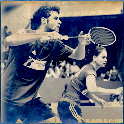
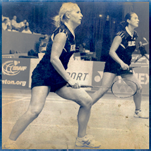
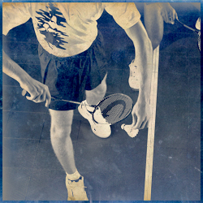
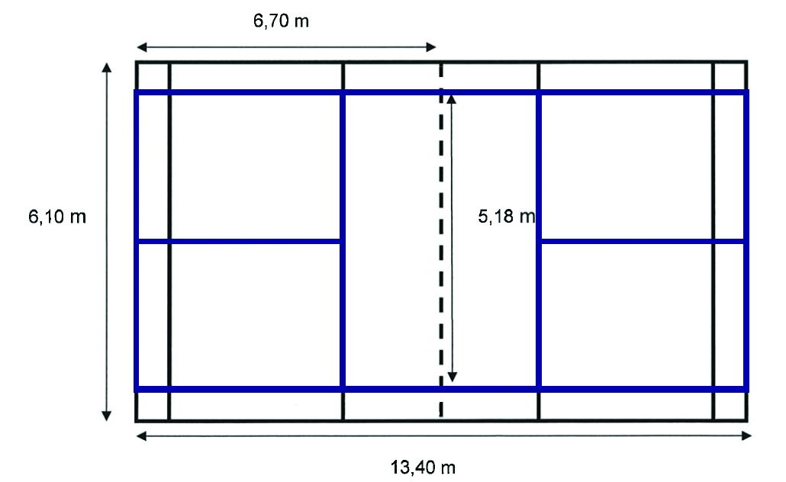
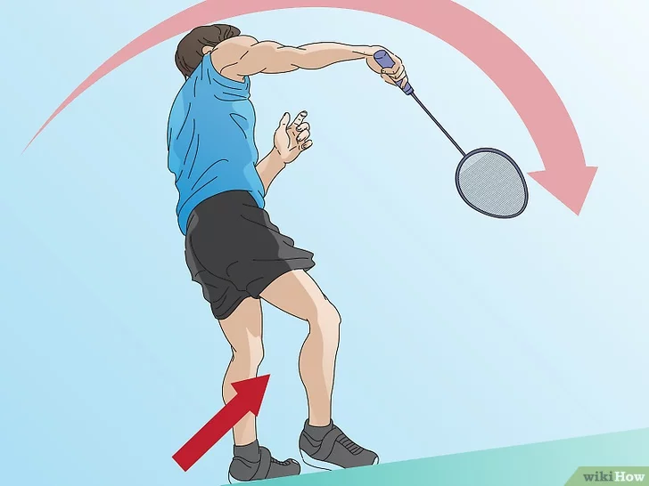

Un match se joue au meilleur de trois sets en 21 points : le camp qui le premier remporte 2 sets, gagne le match. Le camp gagnant un échange ajoute un point à son score.
A 20 égalité, le set est prolongé : c'est le camp qui mène avec 2 points d'écart qui remporte le set. A 29 égalité, le camp marquant le premier 30 gagne le set.
Le camp gagnant un set sert en premier dans le set suivant. Ce système de comptage est valable pour les 5 disciplines du Badminton : Simple Messieurs, Simple Dames, Double Messieurs, Double Dames et Double Mixte.
Avant le début du match, les équipes tirent au sort, soit avec un volant, soit avec une pièce. L'équipe gagnant le tirage au sort exerce son choix :
L'équipe perdant le tirage au sort exerce son choix sur l'autre alternative.
Quand le score atteint la première fois dans le set 11, les joueurs bénéficient d’un arrêt de jeu de 60 secondes.
Entre chaque set, cette interruption est de 120 secondes.
Les joueurs changent de demi-terrain à la fin de chaque set, et au troisième set, lorsque le score atteint la première fois 11.
Au début du set et chaque fois que le score est pair, le serveur sert à droite. Si le score est impair il sert à gauche.
Si le serveur gagne l’échange il marque le point et sert dans la zone alternative.
Si le receveur gagne l’échange, il marque un point et prend le service.
Au début du set et quand le score est pair, le serveur sert depuis la zone de droite. Quand le score est impair il sert depuis la zone de gauche.
Lorsque le camp du serveur gagne l’échange, celui-ci marque un point et le même serveur sert depuis l’autre zone de service.
Si c’est le camp du receveur qui gagne l’échange, c’est lui qui marque un point.
Le camp du receveur devient serveur. Les positions (du côté gagnant et du côté perdant) restent alors inchangées.
Au moment de la frappe, la raquette doit être inclinée vers le bas et le volant doit être frappé sous la taille. La taille est une ligne imaginaire située au niveau de la partie la plus basse de la dernière côte du serveur.
Pendant l'exécution du service, serveur et receveur doivent avoir leurs pieds en position stationnaire.
Il y a faute si : le volant tombe en dehors des limites du terrain, passe à travers ou sous le filet, ne franchit pas le filet, touche le corps ou les vêtements d'un joueur, est frappé dans le camp opposé, est frappé 2 fois de suite par le même joueur ou un joueur et son (sa) partenaire.
Il y a faute si le joueur touche le filet ou le poteau avec sa raquette, ses vêtements ou son corps, envahit le terrain de l'adversaire par dessus le filet (sauf s'il "suit" son geste), fait obstruction vis à vis de l'adversaire (l'empêche d'exécuter son coup), distrait volontairement son adversaire.
Au début de la rédaction de ce site, je pensais rédiger un tutoriel pour expliquer tous les coups du badminton.
Soyez prêt pour le smash. Attendez l’approche du volant en tenant votre raquette avec une prise universelle [1] . Restez vigilant et soyez prêt à faire un smash à n’importe quel moment. On ne sait jamais quand une occasion peut se présenter. Lorsque votre adversaire vous envoie le volant, placez-vous derrière et au-dessous de celui-ci le plus vite possible.
Gardez votre équilibre. Plantez fermement vos pieds par terre. Si le volant arrive rapidement, vous n’aurez peut-être pas beaucoup de temps pour réagir. Dans l’idéal, vous devez avoir les deux pieds dirigés vers le côté du terrain et écartés d’environ la largeur de vos épaules, les genoux légèrement fléchis et les yeux qui suivent la trajectoire du volant.
Levez les bras. Préparez-vous à frapper. Orientez votre raquette vers le haut et aussi loin en arrière que possible sans que cela vous gêne. Votre bras libre doit être plié au niveau du coude, mais à peu près à hauteur de votre menton.
Frappez le volant. Essayez de le frapper au point le plus haut possible. Avant d’abattre votre raquette, inspirez profondément et tendez votre bras libre environ à hauteur de votre épaule. Abattez la main qui tient la raquette en balançant votre bras entier en avant et vers le bas tout en expirant. Le pied du côté où vous tenez la raquette doit s’avancer légèrement dans le même mouvement.
Remettez-vous en position. Laissez votre bras terminer sa trajectoire et remettez-vous en place pour contrer le coup de votre adversaire. Il aura du mal à vous renvoyer le volant après un smash droit, mais s’il y parvient, vous devez être prêt à le lui renvoyer immédiatement.

Le classement national du badminton français est composé de 4 séries :
Chaque série est composée de trois classements, ce qui donne dans l'ordre du meilleur classement au moins fort :
Les joueurs n'ayant jamais fait de compétition n'appartiennent à aucune de ces séries et sont NC (non classés).
Un joueur a un classement propre à chaque discipline (SH, SD, DH, DD, DX pour simple hommes/dames, double hommes/dames et double mixte) et ses classements sont souvent exprimés ainsi : S/D/Mx. Par exemple : R4/R5/R5.
Les classements de doubles sont individuels et non par paires constituées.
Il ne peut pas y avoir plus de 2 écarts de niveau entre les classements d'un même joueur dans deux disciplines, par exemple un joueur qui ne fait que du simple et qui est D7 en simple est au minimum classé D9 en double et en mixte, même s'il n'en fait pas. Il aura également les points minimum correspond à ces classements.
Le classement dépend d'un nombre de points comptabilisés en fonction des 6 meilleurs résultats en tournoi ou interclub des 12 derniers mois.
Ce système est appelé le classement par point hebdomadaire (CPPH).
Le classement est actualisé chaque semaine. Chaque tableau sur un tournoi se voit affecté un certain nombre de point, en fonction du type du tournoi et des joueurs présents. En fonction de son avancé dans le tableau (quart, demi, finale, etc), le joueur gagne un certain nombre de point pour ce tournoi. Il est quasiement impossible de prévoir exactement le nombre de point que l'on gagne sur un tournoi car c'est calculé après, on ne peut que faire des estimations. C'est plus simple pour les interclubs, pour plus d'information, rendez vous sur le site de la fédération